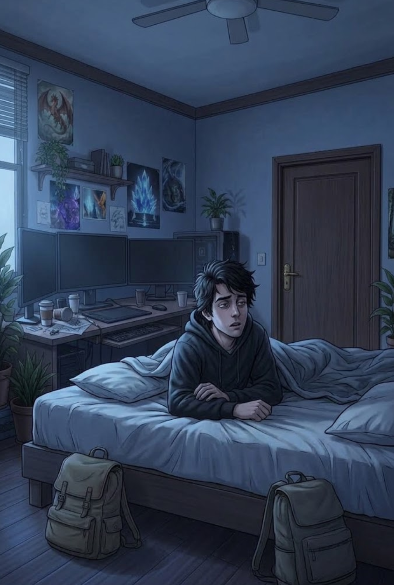

3/3
Camino Final: La Salida
🔊 Narración:
Comprendiendo que la anomalía se alimenta del pánico, Alex apaga las luces y se obliga a mantener la calma en medio de la oscuridad. Al negarle su miedo, los susurros de la entidad pierden fuerza hasta desvanecerse por completo.
De golpe, despierta sobresaltado en su cama bajo la luz del amanecer. Su departamento está en absoluta paz; ha sobrevivido a la noche.
♦ ───── ♦
¡Felicidades!
Has roto el ciclo